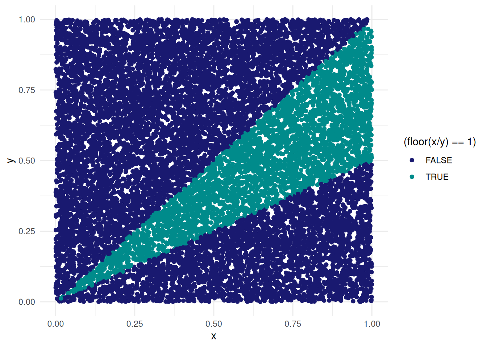
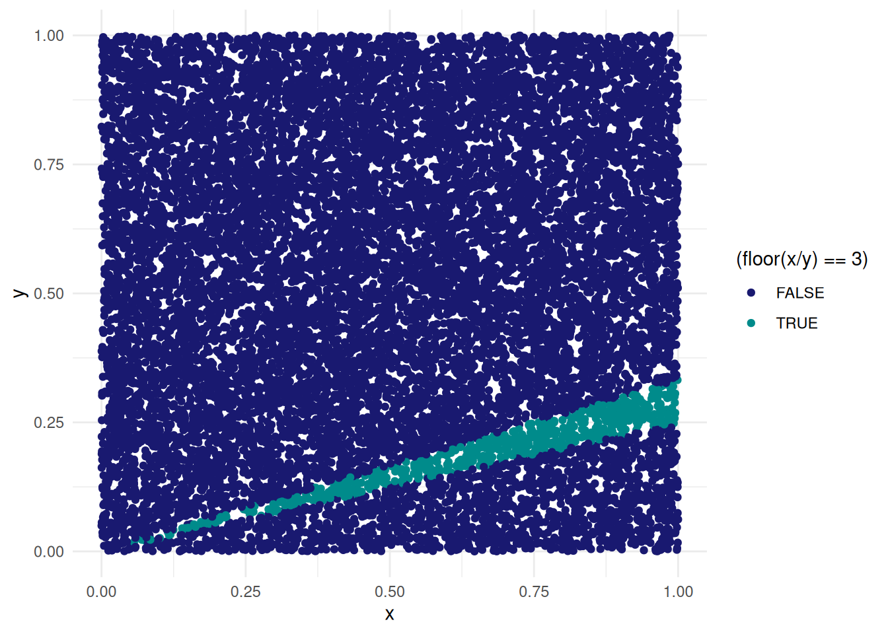
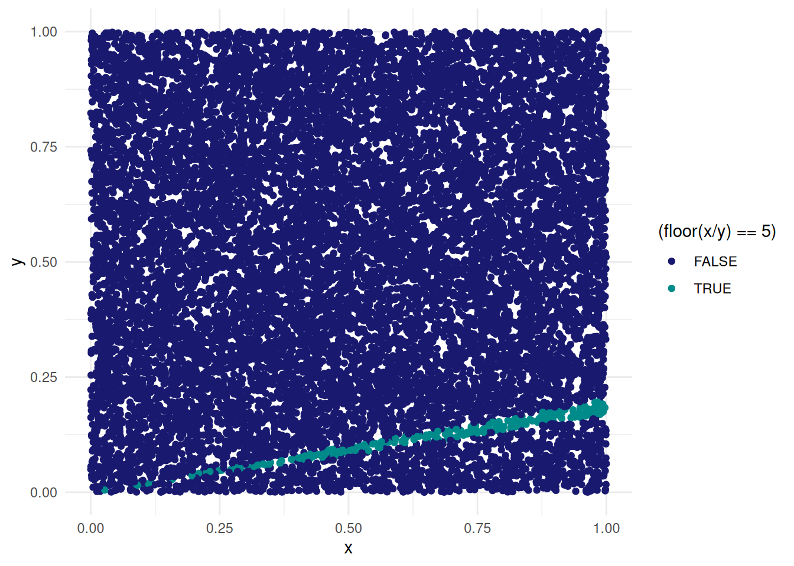
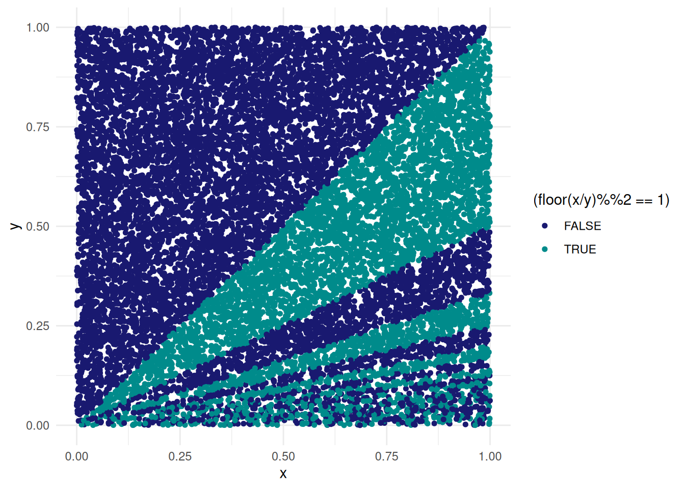

a playful way to solve a complex probability problem
Published
October 27, 2022
I was recently given the following problems in one of my math classes
Let \(X\) and \(Y\) be i.i.d \(\text{Unif}(0,1)\) and define a variable \(Z = ⌊X/Y⌋\), where \(⌊z⌋\) denotes the greatest integer less than or equal to \(z\)
Find the probability that Z is an odd number
at first glance I had absolutely no idea how to solve this problem. And even as I started to understand what the question was asking I still didn’t really know how one would go about solving it.
So I figured I might as well just try to solve for these first few probabilities and see if I could find a pattern.
If you think about it, if \(X,Y\) are i.i.d \(\text{Unif}(0,1)\) then we can imagine each realization of X and Y being like the x and y coordinates of a random point in the cartesian product \([0,1] \times [0,1]\). And if we want to get a rough sense for the probability that \(Z = 1\) then we can just generate many such coordinates and then see how many of these coordinates satisfy our condition. This is a lot of words and it might still be confusing so lets make a plot. We’ll write it as a function since we’ll want to make more of these plots later on:
library(tidyverse)data_points <-tibble(x =runif(15000, 0, 1),y =runif(15000, 0, 1))floor_plot <-function(data, z) { data %>%ggplot(aes(x, y , color = (floor(x/y) == {{ z }}))) +geom_point(size =1.5) +scale_color_manual(values =c("midnightblue", "cyan4")) +theme_minimal()}floor_plot(data_points, 1)

and so since we know that the area of the entire square is just one, then the probability that \(Z = 1\) can be approximated by counting what fraction of the 10,000 points that we generated is in that cyan streak. Moreover we can imagine generating infinitely many points and coloring them accordingly, and in a monte carlo fashion, say that the probability that \(Z = 1\) is just the area of that cyan section. And once you get to see it visually it makes sense why this is the case.
In order to have \(\lfloor X/Y \rfloor =1\) then we certainly need \(X > Y\), since otherwise the floor is zero, but if we make X too big then we end up with 2 or 3 and so on. So we require that \(X \ge Y\) but also that \(X < 2Y\). In other words, once X gets to be twice as large as Y, then the floor is larger than 1.
And if we want to find \(P(Z = 3)\)?
floor_plot(data_points, 3)

and \(P(Z = 5)\)?
floor_plot(data_points, 5)

and how about all odd numbers? (which is what we’re really trying to find)
data_points %>%ggplot(aes(x, y, color = (floor(x/y)%%2==1))) +geom_point(size =1.3) +scale_color_manual(values =c("midnightblue", "cyan4")) +theme_minimal()

cool right?
Beyond being a pretty picture, we’re also most of the way towards solving the problem. Importantly though, the main idea here is that we slowly built up an understanding of the problem by using ggplot on a few small cases.
We can actually solve for this probability by writing it as a sum. Recall how we said that the conditions for \(P(Z = 1)\) were that \(Y \le X < 2Y\), well similarly, the conditions for \(P(Z = 3)\) are that \(3Y \le X < 4Y\) and the pattern continues.